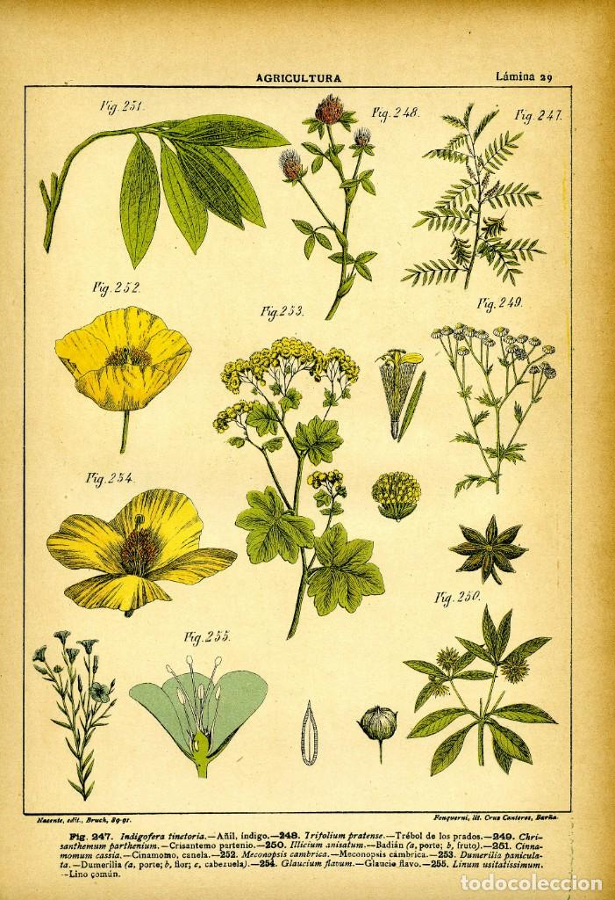
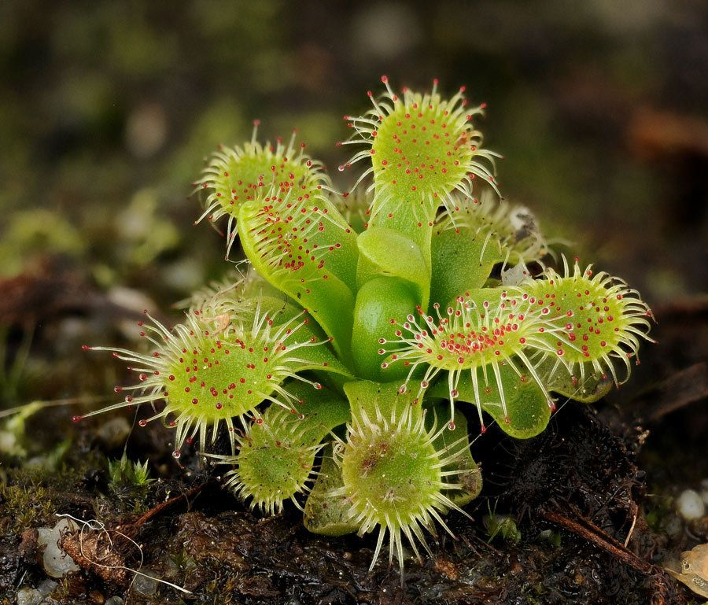
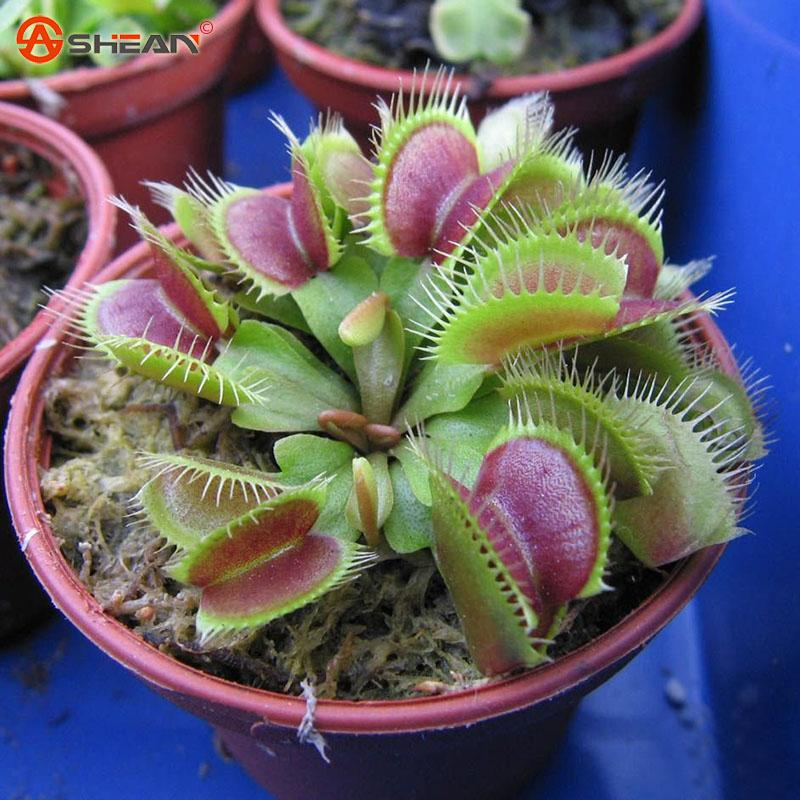
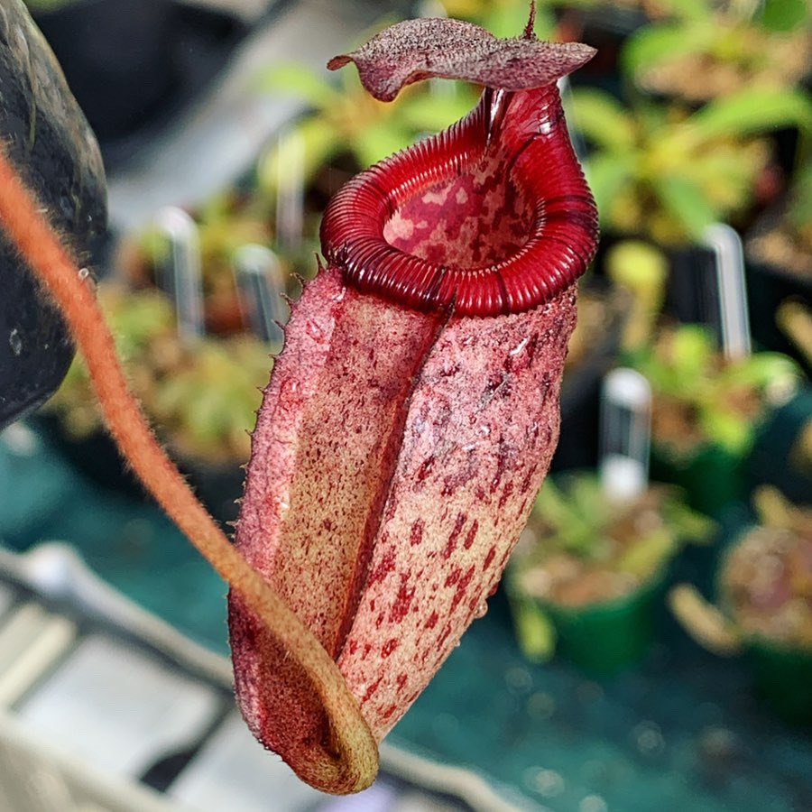

La botánica (del griego βοτάνη, 'hierba') o fitología (del griego φυτόν, 'planta' y λόγος, 'tratado') es la rama de la biología que estudia las plantas, bajo todos sus aspectos, lo cual incluye: descripción, clasificación, distribución, identificación, el estudio de su reproducción, fisiología, morfología, relaciones recíprocas, relaciones con los otros seres vivos y efectos provocados sobre el medio en el que se encuentran.
En el campo de la botánica hay que distinguir entre la botánica pura, cuyo objeto es ampliar el conocimiento de la naturaleza, y la botánica aplicada, cuyas investigaciones están al servicio de la tecnología agraria, forestal y farmacéutica. Su conocimiento afecta a muchos aspectos de nuestra vida y por tanto es una disciplina estudiada por biólogos y ambientólogos, pero también por farmacéuticos, ingenieros agrónomos, ingenieros forestales, entre otros.

Dato Curioso
Seguro que a ti también te gusta el olor a hierba recién cortada, pero posiblemente no sepas que se trata de una llamada de socorro. El compuesto químico que emite la planta al ser cortada es para llamar a depredadores vecinos para que vengan a defenderla de quien la está atacando.
Las increibles plantas carnivoras
Una planta carnívora (también llamada planta insectívora) es una planta que obtiene parte o la mayoría de sus necesidades nutricionales mediante la captura y el consumo de protozoos y animales, especialmente insectos (además de otros artrópodos). Estas plantas crecen generalmente en lugares donde el suelo es pobre, especialmente en nitrógeno, como las tierras ácidas pantanosas y los farallones rocosos. Charles Darwin escribió el primer tratado conocido sobre estas plantas en 1875.
TIPOS DE PLANTAS CARNÍVORAS

Drosera
Popularmente conocida como «Rocío del sol», esta planta tiene unos característicos pelillos rojos que parecen guardar gotas de agua en sus puntas. Es, precisamente, esta característica de su morfología lo que le permite atrapar los insectos gracias a que esa zona de la planta cuenta con una sustancia pegajosa. Las especies de este género, muy variadas en tamaño y forma, pueden encontrarse de forma natural en todos los continentes, excepto en la Antártida.

Dionaea Muscipula
Su estructura de captura está formada por la porción terminal de cada hoja dividida en dos lóbulos que contiene tres pares de pelos sensitivos sobre la superficie interna. Cuando la posible presa hace contacto con uno de estos pelos la trampa se activa, pero solo se cierra si el contacto se repite en cualquiera de ellos dentro de los siguientes veinte segundos. Este requisito del doble contacto es un sistema de seguridad para evitar el desperdicio de energía en caso de que el objeto atrapado no tenga ningún valor nutritivo.

Nepenthes
Es una especie que tiene una estructura en forma de botella que cuelga de la planta por medio de zarcillos muy resistentes.
En cuanto a las plantas jóvenes forman rosetas, mientras que las trepadoras desarrollan tallos largos y leñosos.
Las hojas son muy grandes y en sus extremos tiene un cordón donde ese sitúa la trampa jarro.
Los jarros son de formas y colores variados. Segregan un líquido medio dulzón que atrae insectos, estos resbalan al interior y son digeridos por los jugos de la planta.
ALGUNOS DATOS CURIOSOS SOBRE LAS PLANTAS CARNIVORAS
● Existen más de 625 especies de plantas carnívoras en el mundo.
● Estas plantas no sólo satisfacen sus necesidades nutricionales de insectos, por lo que es mejor llamarlas carnívoras que plantas insectívoras.
● Aunque no tienen músculos, como todas las plantas, las plantas carnívoras se mueven. Esto ocurre por la presión del agua de las paredes de las células de la hoja, que cambia y hace que se cierre.
● Las plantas carnívoras cazan utilizando pinzas, pelos pegajosos, trompetas, urnas y vejigas de succión, dependiendo de la especie que se trate.
● Pueden crecer tanto debajo del agua, en su superficie o sobre la tierra.
● Su altura oscila de entre un centímetro hasta tres metros de alto.
● La primera descripción de las plantas carnívoras la hizo Charles Darwin en 1875.
● Un estudio de la Universidad de Tel Aviv indicó que estas plantas tienen propiedades anti-fúngicas que pueden ser utilizadas con propósitos medicinales.